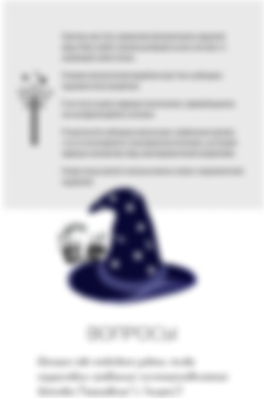

ru
en

Симптомы невроза
Эмоциональное неблагополучие (зачастую без видимых причин)
Нерешительность
Проблемы в общении
Неадекватная самооценка: занижение или завышение
Частое переживание чувства тревоги, страха, «тревожного ожидания чего-то»,
фобии, возможны панические атаки, паническое расстройство
Неопределённость или противоречивость системы ценностей, жизненных желаний
и предпочтений, представления о себе, о других и о жизни. Часто встречается цинизм
Нестабильность настроения, его частая и резкая изменчивость
Раздражительность
Высокая чувствительность к стрессам — на незначительное стрессовое событие
люди реагируют отчаянием или агрессией
Плаксивость
Обидчивость, ранимость
Тревожность
Зацикленность на психотравмирующей ситуации
При попытке работать быстро утомляются — снижается память, внимание,
мыслительные способности
Чувствительность к громким звукам, яркому свету, перепадам температуры
Расстройства сна: часто человеку трудно заснуть из-за перевозбуждённости;
сон поверхностный, тревожный, не приносящий облегчения; утром часто
наблюдается сонливость
Головные, сердечные боли, боли в области живота
Часто проявляющееся чувство усталости, повышенная утомляемость,
общее снижение работоспособности
Панические атаки, головокружения и потемнения в глазах от перепадов давления
Нарушения вестибулярного аппарата: сложность держать равновесие, головокружения
Нарушение аппетита (переедание; недоедание; чувство голода, но быстрая
насыщаемость при приёме пищи)
Нарушения сна (бессонница): плохое засыпание, раннее пробуждение,
пробуждения ночью, отсутствие чувства отдыха после сна, кошмарные сновидения
Психологическое переживание физической боли (психалгия), излишняя забота
о своём здоровье вплоть до ипохондрии
Вегетативные нарушения: потливость, сердцебиение, колебания артериального
давления, нарушение работы желудка, кашель, частые позывы к
мочеиспусканию, жидкий стул
Иногда — снижение либидо и потенции
Дефекты речи

1. Чего я хочу на самом деле?
Если бы у меня были необходимые финансовые средства,
время, безопасность - что я бы делал?
Как я могу - гипотетически - обрести финансовые средства, время,
безопасность?
Могу ли я гипотетически предположить, что мое окружение, близкое или
дальнее, может мне мешать в этом?
Можно представить, что я могу - через несколько шагов, которые я еще
не вижу, - измениться сам, изменить окружение - через обучение
или дистанцию.
И могу представить, что то, что хочу - могу получить сам или с кем-то,
из знакомых или незнакомых людей.
Допустим, у меня есть сокровенное желание для джина. Чего я бы
попросил?
И можно записать три желания, и выбрать из трех желаний то, которое
хочется сильнее всего.
2. Что самое плохое произойдет, если у меня это будет?
Представив себя в желаемой ситуации, могут возникнуть
какие-то образы насилия, или негативного отношения в целом.
И можно позволить себе записать, что из всего этого было
бы самым негативным и пугающим.
3. В той негативной ситуации: если это происходит, то какой (какая) я?
Слабый, глупая, ничтожный и так далее.
Поискать самоопределение, которое приходит в голову. Насколько
бы грубым или жестоким оно ни было.
Было бы важно найти слова, описывающие эти ощущение
искренне перед самим (самой) собой.
4. Зафиксировав внимание на негативном
самоопределении, можно спросить себя:
что я чувствую?
Страх? Вина? Стыд? Что-то еще?
5. Где в теле это чувство?
В груди? В животе?
В шее? В руках? Где-то еще?
И ответив на эти вопросы можно переходить к гипнотерапевтическому
сеансу
Сесть удобно, где никто не будет отвлекать, занять комфортное положение
для спины и головы
Обеспечить условия, чтобы никто не отвлекал, включив авиарежим
в телефоне, убрав звук
Слушать лучше в наушниках
Сеанс "Защищенность"
- Улучшает настроение
- Позволяет выявить базовые противоречия
- Открывает доступ к новым (забытым) воспоминаниям и ощущениям
- Позволяет лучше почувствовать баланс и дисбаланс между хочу, могу и должен
Цена:
Бесплатно
Сеанс "Линия времени"
- Нормализует ощущения баланса жизни
- Восполняет потерянные ощущения
- Позволяет увидеть события своего жизненного пути под новым углом зрения
- Позволяет безопаснее обходить угрозы и избегать их полнее, обладая творческими идеями об этом
Цена:

Полезная литература
Ненасильственное общение
Трансакционный анализ
Не рычите на собаку!

Шопенгауэр как лекарство

Обратная связь